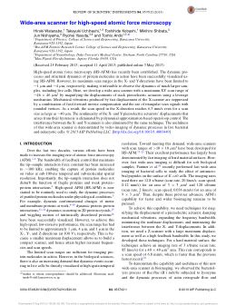
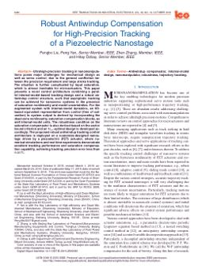
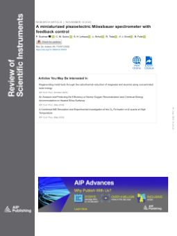

Claude Code is Anthropic's coding agent, and it runs on my computer. I set up the workflow it follows here: a /lit-fetch skill, scripts that fetch and check each paper, and one library that my projects share.
The example on this page came from the spectrometer work. A Mössbauer source has to move at a precisely controlled velocity, and the Fultz group's spectrometer drives it with a piezo stack (Guzman et al. 2023, below). So I asked what the piezo-control literature, much of it from atomic force microscopy, already knows.
How it works
Steps 1 to 5 run without me. The rust line marks papers the script could not fetch, which come back to me as DOIs to get by hand.
Search. Claude runs several searches on OpenAlex, an open index of scholarly papers, and ranks the results by citations, favoring ones with an open-access copy.
Check the library. A paper I already have is not fetched again, so one copy serves every project.
Fetch. Claude looks for a legal open-access copy first (through Unpaywall, arXiv and OpenAlex), then a publisher's text-mining service where I have a license.
Read. The text is pulled out of the PDF on my computer, and the PDFs stay in my library there.
Write a note. For each new paper Claude writes a one-page note on what it means for my project.
Each download is checked for terms the paper should contain, which catches a wrong file. Each note ties its numbers to a page, table or figure, and a script then checks the new notes. Results that come only from a simulation or only from an abstract are labeled, as in the Feng et al. 2022, Wilcox & Devasia and Delibas & Koc cards below.
The ten papers
The search returned 160 candidates and Claude picked ten: 4 already in my library, 4 fetched new and 2 that the script could not fetch (one closed, one that needs a browser click), whose DOIs came back to me. For each paper I keep a one-page note with how reliable the source is, what it means for my project, the key numbers with page and figure, and which parts were read. The titles link to the publisher.
Shows that iterative learning control can push a piezo's hysteresis error down to the sensor noise. They drove at 1 Hz or below, far under the 445 Hz resonance, to keep dynamics out of the hysteresis model, while a Mössbauer drive runs much closer to resonance.
Driving the piezo with charge instead of voltage cut open-loop hysteresis error on a 1 Hz triangle scan to under 1%, with no position sensor. A slow sensor loop then only has to correct drift, which relaxes what the sensor needs to do.

2013 · Review of Scientific Instruments · open access
Drives a lever-amplified piezo scanner open loop with a triangle wave up to about 1 kHz. They keep only the harmonics the scanner can follow, filter the drive through the inverse of the measured frequency response and pre-distort it with a fitted hysteresis polynomial, and each step carries over to shaping a piezo velocity waveform.
closed access library request
2014 · IEEE/ASME Transactions on Mechatronics · fetch by hand
Not yet read: it is closed access, so the DOI came back to me for a library request. Per the abstract, it is the only paper here on piezo velocity control itself. It analyzes stability under Coulomb friction and uses model inversion to pick the piezo input for a target velocity.

2016 · IEEE Transactions on Industrial Electronics · open access
Tests a periodic (internal-model) tracking controller on a piezo stage while the amplifier saturates. Unprotected, the controller winds up and loses the trajectory, which is how a repeating drive waveform that clips at the turnaround would fail too. Their antiwindup compensator recovers it and holds error under 0.23% at about 250 Hz bandwidth.
open access needs a browser
2020 · IEEE/ASME Transactions on Mechatronics · fetch by hand
Not yet read: it is open access, but the publisher's PDF link refuses a script, so it needs one browser click. Per the abstract, it drives a resonant piezo motor at two frequencies for smooth, quiet motion at very low speed, with positioning error under 10 nm from 1 down to 0.001 mm/s.
Compares three standard feedback designs (positive position feedback, integral resonant control and H-infinity) tracking a 100 µm triangle at 5 to 20 Hz, with mass loads that pull the resonance from 205 to 139 Hz. H-infinity tracks best in every case, but the comparison is a simulation on identified models, so only the ranking carries over.

2023 · Review of Scientific Instruments · already in library
Describes our group's piezo Mössbauer drive. With strain-gauge feedback it matched a conventional electromagnetic drive in linewidth and stayed linear within 3.5%. The authors suspect the remaining distortion comes from sensing strain on the stack instead of motion at the source, and the next version has to test that.
The only Mössbauer drive this search found that uses iterative learning control: a voice-coil modulator with proportional feedback plus a learned feedforward term, running a jerk-limited triangle at 25 Hz. Velocity linearity reached R² = 0.996. The actuator is a voice coil, so only the control scheme is a precedent for a piezo drive.
Ranks four sources of open-loop piezo error: offset dependence (up to 30%), amplitude dependence (up to about 25%), hysteresis (5 to 10%) and frequency (1 to 2%). A software feedforward for all four improved positioning about tenfold with no added hardware. For a drive that changes velocity range, this ranking gives the order to calibrate in.
The library
Each run adds to one library of more than 2,000 papers (November 2026), shared by three of my projects.
First pages of 128 of the papers in the library, November 2026.
The full run, as Claude printed it (trimmed)
claude
> /lit-fetch 10 papers in the past 20 years that discuss velocity control with a piezo
● Reading the literature doctrine and the lit-fetch profile for this project.
└ profile: knowledge/literature/ · shared pool: on · paywall flow: legal OA first, then hand back DOIs
● Checking what the library already holds on piezo drives.
└ ls knowledge/literature | grep -E "piezo|ilc|hysteresis|velocity"
2006_leang-devasia_hysteresis-compensating-ilc-piezo-positioners.md
2008_fleming-leang_charge-drives-spm-positioning-stages.md
2023_guzman_miniaturized-piezoelectric-mossbauer-feedback.md
2023_yoon_velocity-modulator-portable-mossbauer-ilc.md
… 9 more piezo/drive synopses
● Searching OpenAlex, 2006–2026, eight queries.
└ "piezoelectric actuator velocity control"
"iterative learning control piezoelectric actuator"
"repetitive control piezoelectric nanopositioning"
"Mossbauer spectrometer drive velocity control"
… 4 more; 160 unique DOIs after dedupe, ranked by citations, biased to open access
● Pool check before any download.
└ python -m litfetch_engine.pool --find <DOI> ×13
HIT 10.1016/j.mechatronics.2005.11.006 curated → 2006_leang-devasia_…
HIT 10.1016/j.ultramic.2008.05.004 curated → 2008_fleming-leang_…
HIT 10.1063/5.0157651 curated → 2023_guzman_…
HIT 10.1038/s41598-023-46846-x curated → 2023_yoon_…
MISS 9 others (not in the pool, fetch it)
● Acquire + tier-1 extract, nine candidates.
└ 10.1063/1.4803449 ok Unpaywall (green, university repository) pdfminer
10.1109/tie.2016.2569060 ok Unpaywall (green, university repository) pdfminer
10.1038/s41598-022-14332-5 ok Unpaywall (gold, CC-BY) pdfminer
10.1038/s41598-026-55176-7 ok Unpaywall (gold, accepted manuscript) pdfminer
10.1109/tmech.2014.2326396 -- closed, no OA copy, no text-mining route for IEEE
10.1109/tmech.2020.2984367 -- OA, but the PDF link refuses a script → needs a browser
10.1109/tie.2019.2946554 -- OA copy is a landing page, not a PDF (dropped from the 10)
10.1109/tmech.2020.2969222 -- OA copy is a landing page, not a PDF (dropped from the 10)
10.3390/mi14112009 -- OA, but the PDF link refuses a script (dropped from the 10)
● Checking each download is the paper we wanted.
└ python ops/fetch_check.py <DOI> --expect "piezo,hysteresis,triangular,…"
4/4 every expected term present
● Reading the extractions and writing synopses.
└ knowledge/literature/2013_watanabe_wide-area-scanner-hs-afm-rounded-triangle.md
knowledge/literature/2016_liu_robust-antiwindup-piezo-nanostage-tracking.md
knowledge/literature/2022_feng_robust-hinf-control-piezo-nanopositioning.md
knowledge/literature/2026_umeda-kodera_feedforward-piezo-nonlinearity-hs-afm.md
note: Feng 2022's controller comparison is simulation on identified models, flagged in its synopsis
● Mechanical check on the new synopses.
└ python ops/synopsis_check.py <4 files>
ok no NEW adversarial findings
● Write-back.
└ INDEX.md +4 rows
BACKLOG.md +2 rows under ⬇ Needs Kyle
● Done. 10 papers: 4 already in the library, 4 fetched and curated, 2 handed back.
Two need a human. Wilcox & Devasia 2014 is closed (library request):
10.1109/tmech.2014.2326396
Delibas & Koc 2020 is open access but needs a browser click:
10.1109/tmech.2020.2984367